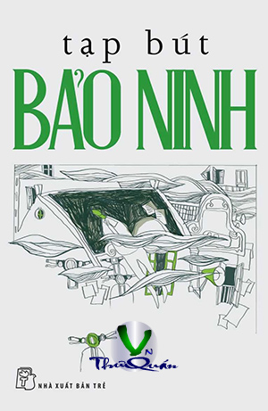

« Back
Tạp Bút Bảo Ninh
By Bảo Ninh

LỜI TỰA
Lõi Đời Là Một Quá Trình
Không Có Liệt Sĩ Nào Là Vô Danh
Lễ Duyệt Binh Đi Vào Cuộc Kháng Chiến Chống Mỹ
Nơi Lắng Hồn Núi Sông
Mục Đích Đúng Đắn, Động Cơ Lành Mạnh
Thế Kỷ Của Sự Đồng Lòng
Ơn Sâu
Những Phi Vụ C47
Vì Sao Học Vậy Thi Vậy
Lý Sự
Một Kiểu Xé Tiền Dân
Pha Tiếng
Nếu Không Có Tiền
Bụt Chùa Nhà Không Thiêng
Hư Cấu Phải Như Thật
Nghệ Thuật Ẩm Thực Hay Là...
Sự Đồng Cảm Của Những Tài Năng
Thung Lũng Ia D'rang Giữa Lòng Lầu Năm Góc
Mùa Xuân Xa Nhà
Khổ Tận Cam Lai
Văn Minh Phiên Bản
Vị Danh Tướng Của Cách Mạng
Lạm Dụng Từ Đồng Khởi
Không Có Sự Tối Mật Nào Ngoài Sự Thật
Tinh Thần Trọc Phú
Chữ Ơn Nên Hiểu Thế Nào
Thanh Niên Xung Phong - Những Hy Sinh Lớn Lao
Lắm Thầy Thì Nhiều... “ Cải”
Chỉ Nên Bàn Chuyện Vũ Trường
Đèn Xanh Thì Đi Đèn Đỏ Thì Dừng
Kỷ Lục Của Sự Trời Ơi Đất Hỡi
Đành Kính Cẩn Mà Im Đi Chăng?
Đặt Tên Sao Cho Ổn?
Đừng Dạy Như Thế
Thầy Cáu
Tiền... Tiền... Tiền
Câu Hỏi Quá Đơn Giản
Vô Cảm
Dành Một Giờ Để Nói Thật
Im Lặng Khó Hiểu Và Đáng Sợ
Sự Bình Thường Kỳ Quái
Có Phải Là Bé Xé Ra To?
Đại Nhảy Vọt
Dân Mến Yêu Tôi!
Giàu Liệu Có Sang?
Phép Thử
Ăn Cắp “Sảng Khoái” Và " Tự Tin”
Bóng Đá Là Bóng Đá
Chuyện Ơn Nghĩa Luôn Kiệm Lời
Quân Tử Phòng Thân
Xin Đừng Đại Ngôn
Nghiêm Khắc Hòa Cả Làng
Nghiện Kỷ Lục
Sao Ông Không Dùng Bí Danh?
Lập Dị
Có Học Mà Mù Chữ
Bia Miệng
Năm 69
Thật Sướng Được Là Người Hà Nội
Ất Mão, Một Mùa Xuân Không Thể Nào Ngờ Và Không Thể Nào Quên
Sau Chiến Tranh, Chúng Tôi Viết Văn
Khiếm Nhã Hay Thói Đố Kỵ
Nền Văn Học Nặng Thương Tích Chiến Tranh
Ký Ức Riêng Về Nhà Văn Nguyễn Tuân
Văn Mình Vợ Người
Mấy Cảm Nghĩ Về Nghề Văn
Thuế Chữ
Độc Giả Và Nhà Văn
Bụi Thời Gian Tám Mươi Năm
Tiểu Thuyết Thời Đổi Mới
Hiệu Ứng “ Thời Xa Vắng”
Người Anh Chí Tình Của Các Nhà Thơ
Cách Tân Trước Tiên Từ Độc Giả
Người Khai Mở Đường Cho Văn Học
Thầy Nguyên Ngọc Của Tôi
Đọc Lê Vân Yêu Và Sống
Đọc Ký Ức Vụn Của Nguyễn Quang Lập
Đọc Ma Chiến Hữu
Trường Ca Trần Anh Thái
Bản Thảo Một Tuyệt Tác
Sự Mới Mẻ Đến Từ Quá Khứ
Quân Khu Nam Đồng!